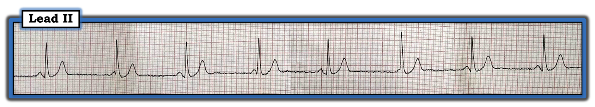
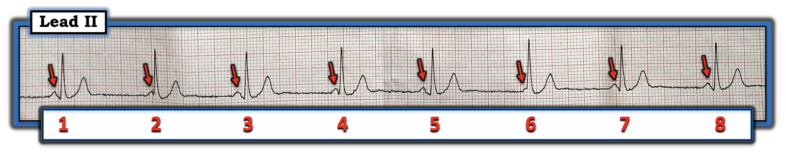
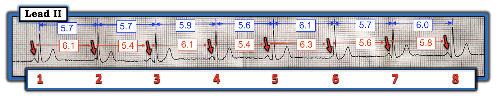
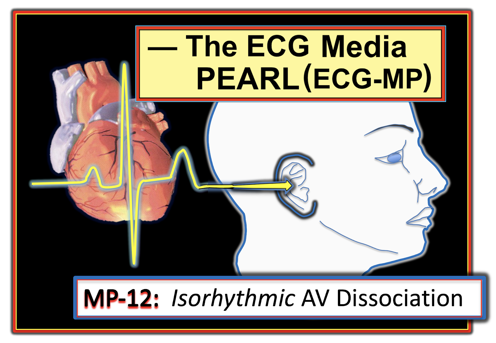
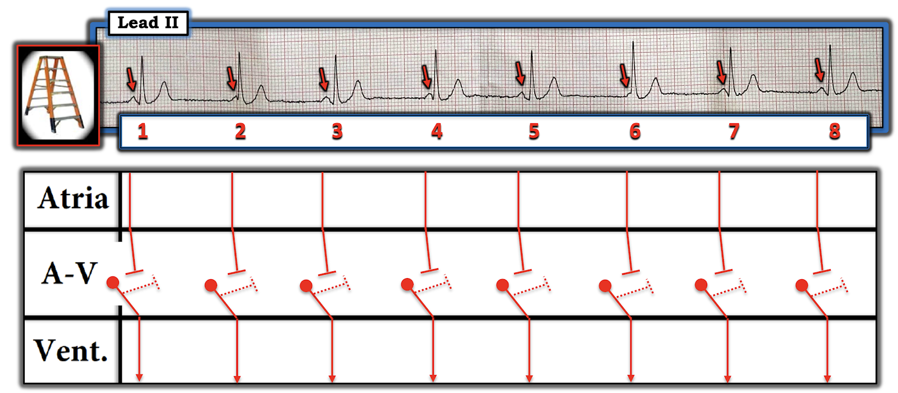
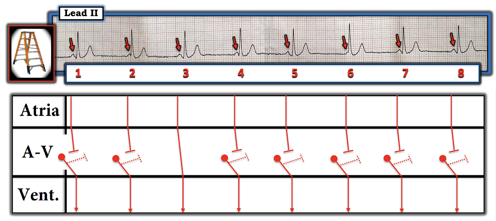

Blog #195 — Sóng P có liên quan với QRS không?
Dải nhịp chuyển đạo II dài trong Hình-1 được ghi từ một nam giới 27 tuổi, trước đây khỏe mạnh, đến khám vì khó thở.
CÂU HỎI:
- Chuyện gì đang xảy ra với nhịp tim trong Hình-1?
- Bệnh nhân này có cần đặt máy tạo nhịp không?
- Câu hỏi THÊM ĐIỂM: Hiện tượng mà chúng ta thấy trong nhịp này có một cái tên đặc biệt. Bạn có biết đó là gì không?


Cách tiếp cận CỦA TÔI với nhịp trong Hình-1:
Tôi thấy có 2 bước đơn giản giúp ích rất nhiều cho cả việc giải thích lẫn việc đọc các rối loạn nhịp phức tạp. 2 bước đơn giản này là: i) Đánh số các nhát bóp; và, ii) Đánh dấu sóng P bằng MŨI TÊN (Hình-2):
- Hãy dùng compa đo (calipers)! Như tôi vẫn luôn nhấn mạnh — cách DỄ NHẤT để ngay lập tức phân tích các rối loạn nhịp phức tạp giỏi hơn (và nhanh hơn) là dùng compa đo. Sóng P hiện rõ ở phía trước một số nhưng không phải tất cả các phức bộ QRS trong Hình-2. Nhờ dùng compa đo — tôi lập tức loại bỏ mọi nghi ngờ rằng những biến dạng nhỏ (một phần) mà tôi thấy làm méo phần khởi đầu của phức bộ QRS #2 và 6 đúng thật là sóng P, bị che khuất một phần do xảy ra gần như đồng thời với các nhát bóp này.
- Chẳng phải thú vị sao khi khoảng PR liên tục thay đổi từ nhát-này-sang-nhát-kế-tiếp trong Hình-2?
Tiếp tục đánh giá một cách hệ thống nhịp trong Hình-2 theo cách tiếp cận Ps, Qs & 3R (Xem ECG Blog #185):
- QRS hẹp (ít nhất là ở chuyển đạo theo dõi duy nhất này).
- Nhịp thất trông khá (nhưng có lẽ không hoàn toàn?) đều, tần số khoảng ~50-55/phút.
- Và, như đã nói — khoảng PR liên tục thay đổi, nên không có mối liên hệ cố định nào giữa sóng P và các phức bộ QRS kế cận.


Cách tiếp cận CỦA TÔI với nhịp này (Tiếp theo):
Tôi tự hỏi TẠI SAO khoảng PR lại liên tục thay đổi trong Hình-2?
- Đã đến lúc dùng compa đo một lần nữa! Tôi tự hỏi LIỆU khoảng P-P trong nhịp này có giữ hằng định không — và cả LIỆU khoảng R-R có giữ hằng định không?
- Để cho rõ — tôi trình bày các số đo bằng compa của mình trong Hình-3 cho cả khoảng P-P (số màu ĐỎ) lẫn khoảng R-R (số màu XANH). Lưu ý rằng cả tần số nhĩ lẫn tần số thất đều không hoàn toàn hằng định trong Hình-3. Thay vào đó, có sự dao động nhẹ ở cả hai khoảng, và cách chúng thay đổi khác nhau.


Tổng Hợp Lại Toàn Bộ:
Theo cách tiếp cận Ps, Qs & 3R — nhịp trong case hôm nay khá (nhưng-không-hoàn-toàn) đều, với tần số của nhịp thất trong khoảng ~50-55/phút. Phức bộ QRS chắc chắn hẹp trên dải nhịp chuyển đạo II duy nhất này. Sóng P có hiện diện — nhưng chúng không liên quan với các phức bộ QRS kế cận (vì khoảng PR liên tục thay đổi suốt bản ghi).
- Việc khoảng PR trong Hình-2 liên tục thay đổi — cho chúng ta biết rằng nhiều (nếu không phải tất cả) sóng P không được dẫn truyền. Rõ ràng, khoảng PR trước các nhát #1, 2, 4; 6, 7 và 8 là quá ngắn để có thể dẫn truyền. Tôi nghĩ khoảng PR trước nhát #5 hơi ngắn hơn khoảng PR trước nhát #3. Liệu một trong hai sóng P này có được dẫn truyền hay không thì còn bàn cãi — và có lẽ không thể xác định chắc chắn chỉ từ dải nhịp duy nhất này. Dù thế nào đi nữa — thông điệp “cần nhớ” là có phân ly nhĩ thất (AV dissociation) trong hoặc một phần hoặc toàn bộ nhịp được trình bày trong Hình-2.
- Vì phức bộ QRS trong Hình-2 hẹp và không phải là kết quả của các nhát dẫn truyền từ xoang (có thể trừ các nhát #3 và 5) — phần lớn các phức bộ QRS trong bản ghi này xuất phát từ nút AV (tức là, chúng là các nhát bộ nối).
LƯU Ý: Mặc dù chúng ta đã xác lập sự hiện diện của phân ly nhĩ thất trong một phần (hoặc toàn bộ) nhịp ở Hình-2 — Phân ly nhĩ thất không bao giờ là một “chẩn đoán”. Thay vào đó — nó chỉ đơn thuần mô tả một thực tế là, ít nhất trong một thời gian, các sóng P đều đặn không liên quan với các phức bộ QRS kế cận.
- Như đã bàn chi tiết trong ECG Blog #192 — có 3 Nguyên nhân gây Phân ly Nhĩ thất cần xem xét. Đó là: i) Blốc AV độ 2 hoặc độ 3 (trong đó một hoặc nhiều sóng P lẽ ra phải được dẫn truyền lại không được dẫn truyền); ii) Phân ly nhĩ thất do “Chiếm quyền” (Usurpation) (trong đó một nhịp bộ nối gia tốc giành lấy chức năng tạo nhịp); và/hoặc iii) Phân ly nhĩ thất do “Nhường quyền” (Default) (trong đó sự chậm lại = “nhường quyền” của ổ tạo nhịp nút xoang nhĩ (SA) cho phép một ổ tạo nhịp thoát bộ nối xuất hiện).
- Không có bằng chứng nào của blốc AV trong nhịp hôm nay. Đó là vì không sóng P nào (mũi tên ĐỎ) không được dẫn truyền — đã có cơ hội để dẫn truyền, do khoảng PR quá ngắn. Điều này không có nghĩa là không thể có một mức độ blốc AV nào đó — mà chỉ có nghĩa là nhịp trong Hình-2 quá ngắn để trả lời câu hỏi này (vì chúng ta không bao giờ thấy sóng P xuất hiện ở những thời điểm trong chu chuyển tim mà lẽ ra chúng phải được dẫn truyền, nhưng lại không dẫn truyền).
- Nguyên nhân gây phân ly nhĩ thất trong Hình-2 cũng không phải "chiếm quyền". Nhìn vào các khoảng R-R mà tôi đã đo (số màu XANH trong Hình-3, dao động từ 5.7-đến-6.1 ô lớn) — điều này tương ứng với tần số thất khoảng ~49-đến-53/phút — nằm hẳn trong tần số thoát bộ nối thông thường là 40-60/phút ở người lớn. Như vậy, không có "chiếm quyền" — vì nhịp thoát bộ nối chắc chắn không gia tốc!
Vậy chỉ còn lại “nhường quyền” ( = sự chậm lại của ổ tạo nhịp xoang) là nguyên nhân gây phân ly nhĩ thất mà chúng ta thấy trong nhịp hôm nay. Chính vì nút SA chậm lại — nên một nhịp thoát bộ nối mới có thể xuất hiện.
- Dù vậy — có một điểm khác biệt giữa nhịp hôm nay và biến thể phổ biến hơn nhiều của phân ly nhĩ thất do “nhường quyền” mà chúng ta đã thấy trong ECG Blog #192. Phần lớn thời gian, các nhịp thoát đều đặn một cách đáng ngạc nhiên — như nhịp thoát bộ nối trong Blog #192.
- Ngược lại, trong case hôm nay — các khoảng P-P và R-R mà tôi đo trong Hình-3 (số màu ĐỎ và XANH trong Hình này) liên tục dao động. Tuy vậy — tỉ lệ 1 sóng P với 1 phức bộ QRS vẫn được duy trì, dù sóng P di chuyển ra-vào phức bộ QRS.
Hiện tượng tần số xoang và tần số thoát bộ nối gần như bằng nhau, tiếp tục dao động nhẹ, nhưng bằng cách nào đó vẫn duy trì được sự gần kề (dù hơi thay đổi) giữa sóng P với QRS theo thời gian được gọi là phân ly nhĩ thất đồng nhịp (isorhythmic AV dissociation).
- Như tôi trình bày trong ECG Media PEARL #12 (6:40 phút Âm thanh) hôm nay — dạng phân ly nhĩ thất bất thường này được định nghĩa ngay bởi tên gọi của nó. Cả hai ổ tạo nhịp đều “đồng nhịp” (tức là, tần số của sóng P xoang và của nhịp bộ nối gần như bằng nhau) — và — có sự “phân ly” nhĩ thất (tức là, tâm nhĩ và nút AV đập độc lập với nhau — và không có dẫn truyền xung động xoang nào chừng nào nhịp này còn kéo dài).
- LƯU Ý: Thuật ngữ giàu hình ảnh “accrochage” (từ tiếng Pháp nghĩa là “bám vào” hay “móc vào” một thứ gì đó) — thường được dùng để chỉ sự bám đuổi kỳ lạ của sóng P theo các phức bộ QRS kế cận, dù tần số của nhịp sóng P và nhịp QRS có dao động nhẹ. Thuật ngữ kém hình ảnh hơn, "đồng bộ hóa" (synchronization) khi đó được ưa dùng hơn khi hiện tượng phân ly nhĩ thất đồng nhịp kéo dài lâu hơn.
VỀ MẶT LÂM SÀNG — Ý nghĩa của phân ly nhĩ thất (dù là đồng nhịp hay không) phụ thuộc vào bối cảnh lâm sàng mà nó xảy ra.
- Như đã nhấn mạnh ở trên — không có bằng chứng nào của blốc AV trên bản ghi hôm nay. Giả sử việc không có bằng chứng blốc AV này vẫn tiếp tục khi theo dõi thêm — diễn tiến lâm sàng của phân ly nhĩ thất đồng nhịp ở nam giới 27 tuổi này nhiều khả năng là lành tính.
- LƯU Ý: Phân ly nhĩ thất do “nhường quyền” không hiếm gặp ở những người khỏe mạnh, hay chơi thể thao — vì nhịp chậm xoang làm tiền đề thường gặp khi trương lực phế vị lúc nghỉ tăng. Cho những người này vận động gắng sức ngắn thường là đủ để làm tăng tần số xoang một cách đáng kể — điều mà, khi nhịp là lành tính, sẽ khiến sóng P xoang giành lại quyền kiểm soát nhịp (và lấn át tần số thoát bộ nối lúc nghỉ).
- Tôi nghĩ rằng khó thở của bệnh nhân trong case hôm nay không liên quan đến nhịp tim của anh ấy. Không có bằng chứng nào gợi ý rằng bệnh nhân này sẽ cần đặt máy tạo nhịp.


ECG Media PEARL #12 (6:40 phút Âm thanh) hôm nay — ôn lại thực thể được gọi là phân ly nhĩ thất đồng nhịp.
Đề xuất các giản đồ bậc thang cho case hôm nay:
Tôi kết thúc case này bằng việc đề xuất 2 giản đồ bậc thang (laddergram) khả dĩ cho nhịp hôm nay.
- Tôi cho rằng giản đồ bậc thang tôi vẽ trong Hình-4 nhiều khả năng đúng hơn — vì phần lớn trường hợp phân ly nhĩ thất đồng nhịp thực sự, chừng nào hiện tượng này còn kéo dài — các ổ tạo nhịp xoang và bộ nối tiếp tục phát xung trong thời kỳ trơ tuyệt đối của nhau, dẫn đến không dẫn truyền tất cả các sóng P xoang.
- Dù vậy, vì chúng ta chưa xem một bản ghi trước đây nào của bệnh nhân này khi anh ấy ở nhịp xoang bình thường — chúng ta không hề biết “khoảng PR bình thường” của anh ấy là bao nhiêu khi các nhát xoang được dẫn truyền. Vì thế không thể biết khoảng PR 0.14 giây thấy trước nhát #3 có (hay không) là nhát dẫn truyền từ xoang (Hình-5).
- Về lý thuyết — phân ly nhĩ thất đồng nhịp thực sự, trong đó không có xung động xoang nào được dẫn truyền, sẽ tiếp tục cho đến khi có thay đổi đáng kể ở tần số xoang hoặc tần số bộ nối.
- Trên thực tế mà nói — nhát #3 có phải là nhát dẫn truyền từ xoang hay không không quan trọng. Dù thế nào đi nữa — cơ chế nền của nhịp hôm nay là nhịp chậm xoang dẫn đến một giai đoạn phân ly nhĩ thất đồng nhịp với nhịp thoát bộ nối — và ở một người trẻ tuổi khỏe mạnh, gần như chắc chắn là lành tính.




-------------------------------------------------------------------------
Lời cảm ơn: Xin cảm ơn Feroz Haroon (từ Srinagar, Kashmir, Ấn Độ) đã cung cấp case và bản ghi này.
-------------------------------------------------------------------------